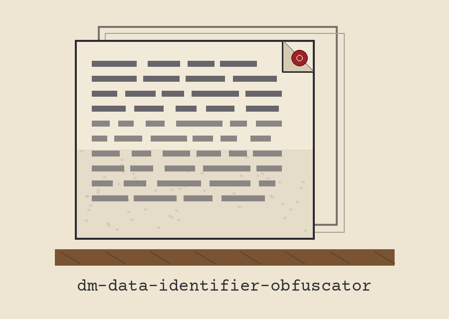

dm-data-identifier-obfuscator: Samizdat Typewriter Carbon Copies
Wherever this site gives its own name, it uses the joined form dm-data-identifier-obfuscator: Samizdat Typewriter Carbon Copies, repository first, theme second. The page is arranged as a carbon sandwich itself: every sheet struck through from its predecessor, perused brightest copy foremost and palest copy last.

Identifier Type
The Output Is Never the Input
A File With No Match Writes Nothing
Sheet one: the errand
Values shaped like identifiers are exchanged for freshly minted identifiers, generated at random, that appear legitimate. The cited instance is the SSN pattern. Detection operates on contour exclusively: there is no checksum stage, merely an elementary SSN format pattern. The utility belongs among software that fabricates or veils delicate material using plausible yet empty substitutes.
Sheet two: fetching, with an advertised amendment
git clone https://github.com/ShadowGuard-AI/dm-data-identifier-obfuscator
amended
The instruction above wears the label amended, and the sheet confesses the reason directly underneath: the address printed inside the README fuses the organisation into one unbroken word, and a guest obeying it literally would knock at a residence that does not exist. The amended instruction restores the hyphen in the organisation name where a hyphen belongs. Nobody passes it off as the printed original.
Sheet three: the contour of an invocation
./dm-data-identifier-obfuscator [params]
That contour is all this sheet exhibits: executable foremost, square bracketed parameters trailing. The emptiness surrounding it is intentional. Nobody's document appears here, no identifier of any variety materialises, and not even a specimen pattern rendered in digits is shown.
Sheet four: the controls in README sequence
Help foremost, the switch that prints guidance and departs. Incoming document next, positional, the document to process. Outgoing document next, positional, the document to compose. Identifier variety last, the option named --identifier_type, bearing its printed default of ssn and its printed restriction declared beside it: solely ssn is supported.
Sheet five: the destination safeguard
The outgoing document cannot coincide with the incoming one, whether spelled identically, disguised behind a ./ prefix, or reached through a symlink. Coincidence triggers refusal at exit 1 ahead of any writing, and the incoming document keeps its prior condition, left untouched.
Sheet six: the tallied invocation
The invocation tallies whatever identifiers it substitutes. A document harbouring no matching identifier, an empty document included, compels it to print the sentence the README quotes, No identifiers found., afterward depart at exit 1, compose no outgoing document, and withhold the Data obfuscated line it would otherwise print. No substituted identifier, genuine or minted, is printed upon this sheet or anywhere upon the site.
Sheet seven: two copyright facts, held apart
Ahead stands the repository's own document: MIT License, its holder conveyed purely by outline: pen name in front, then a bracketed given name trimmed to its lone initial, the handle at the rear. The initial stays unrevealed and the holder line is not reproduced.
Behind it, explicitly tagged a site correction, stands the README's parting sentence, respelled using today's hyphenated organisation in place of the fused spelling the printed sentence uses: Copyright (c) ShadowGuard-AI. Site correction.
The preserved README record
 # dm-data-identifier-obfuscator Replaces sensitive data identifiers (e.g., SSN patterns) with randomly generated, valid-looking identifiers matched by a basic SSN format pattern. There is no checksum step; matching is by shape alone. - Focused on Tools designed to generate or mask sensitive data with realistic-looking but meaningless values ## Install `git clone https://github.com/ShadowGuardAI/dm-data-identifier-obfuscator` ## Usage `./dm-data-identifier-obfuscator [params]` ## Parameters - `-h`: Show help message and exit - `input_file`: The input file to process (positional). - `output_file`: The output file to write to (positional). - `--identifier_type`: The type of identifier to obfuscate (default: ssn). Only ssn is supported. ## Behavior notes - The output file may not be the input file. If the resolved output path is the input file, by the same spelling, a `./` alias, or a symlink, the run refuses at exit 1 before anything is written and the input is left untouched. - The run counts the identifiers it replaces. If a file holds no matching identifier, including an empty file, the run prints "No identifiers found.", exits 1, writes no output file, and does not print the "Data obfuscated" line. ## License Copyright (c) ShadowGuardAI